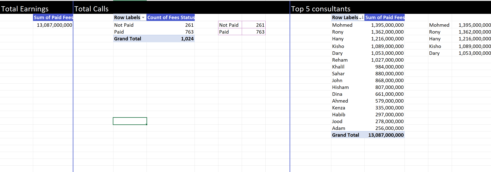
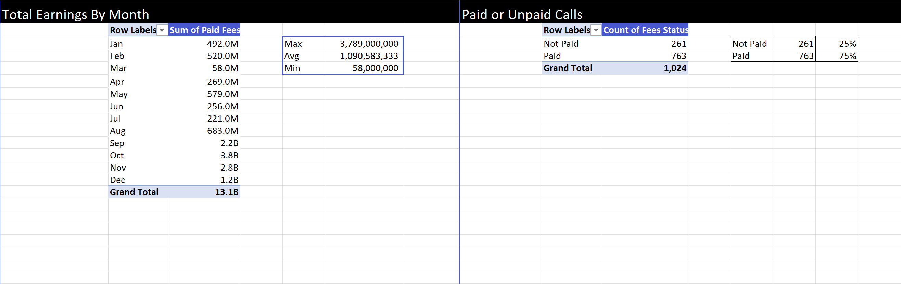
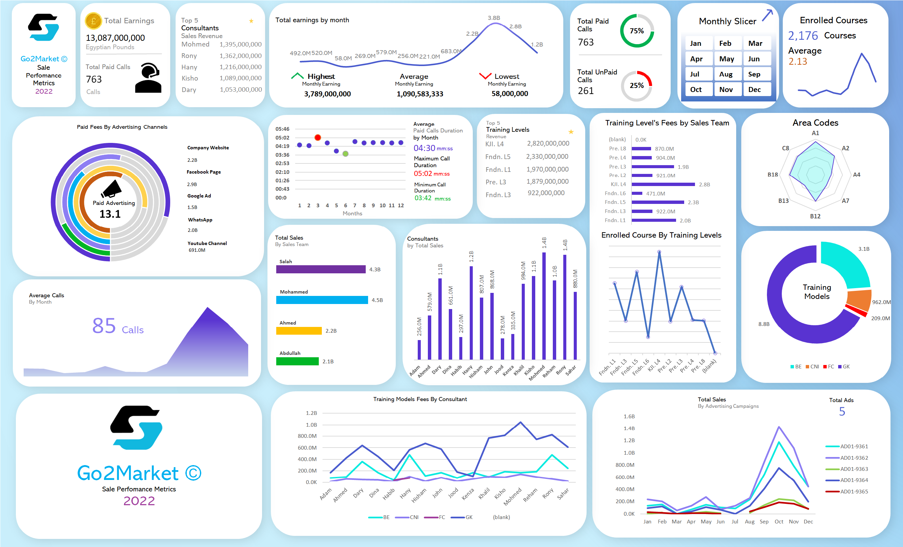

Go2Market, Sales and Advertising Performance 2022
A detailed analysis of Go2Market, an education and training service provider with the aim
to gain marketing performance insights from the company's 2022 marketing strategies, build an interactive dashboard and use it to make informed decisions in order
to maximise the return on marketing spend.
Introduction
The data for this project was otained from an online case study of an education and training service provider Go2Market. Go2Market offers it's customers various training programs to empower them with skills to be job market ready. The company is based out of Egypt and it operates globally offering in person teaching in various locations around the world as well as online course modules. In 2022, the company's marketing department deployed a comprehensive marketing campaign to improve the enrollment rates in their educational programs, this involved cold-calling sales teams and consultants, and digital advertising through channels like the company website, Google Ads and on social media platforms.
My Role
I am an analyst in the marketing team and have been tasked with collecting all the marketing data for the year 2022 to disover insights, analyse the data, build a dashboard and suggest recommendations for the following year. I was tasked with answering these key business questions.
Data Preparation and cleaning
I dowloaded the data and stored it with appropriate name conventions in a folder on my local disk. The data sets were zipped files MS Excel CSV formats. I unzipped the folders, and had a glance of the data I'll be interating with for this project I used Microsoft Excel to carry out preliminary cleaning, removing duplicate records, fixing data types, handling missing values, trimming unwanted spaces and converting the data into a table.
Analysis
After cleaning the data, I used Pivot tables to answer the questions and also make a deep dive into all the data to learn what other stories it told and eventually creating an excel dashboard.
Pivot Tables
 

Data Visualization
I used Excel to create the dashboard and using my graphics design skills, I made it intuitive and added visual elements to the background of the dashboard.
Insights
1. Total revenue in 2022 was 13,087,000,000 Egyptian Pounds.
2. The top 5 consultants in terms of revenue generated were Mohmed, Rony, Hany, Kisho and Dary.
3. Revenue generated remained relatively flat from January to August after which it rose significantly between August to December reaching a high of 3.8B at its peak in October.
4. 2,176 courses were enrolled in with GK being the most enrolled in module generating 8.8B in revenue followed by CNI with 3.1B.
5. Television advertising generated the most revenue followed by the Facebook and Company Website, Youtube raked in the least amount of revenue.
6. Cold calling perfomed well with 75% of the calls made leading to generation of revenue.
Recommendations
1. Between the months of August to October, revenues rose significantly which suggests that most enrollments and semesters occur during those months, for that
2. reason, advertising in the earlier months of the year should be assessed and the ROI evaluated to ensure that it's worth incurring the advertising costs during the months of low enrolments.
3. Since Youtube ads brought in the lowest revenue, advertising on it should be assessed and maybe the company should divert the resources to other advertising channels that are effective and generating sales.
4. Advertising should focus on showcasing the most popular training models and levels because that sigiifies that there's significant demand and interest in these particular programs.
Thank you for taking the time, to look at my work. Constructive feedback is welcome and will be appreciated.
Connect with me on LinkedIn here. You can also download the dataset and dashboard for this project by clicking here.